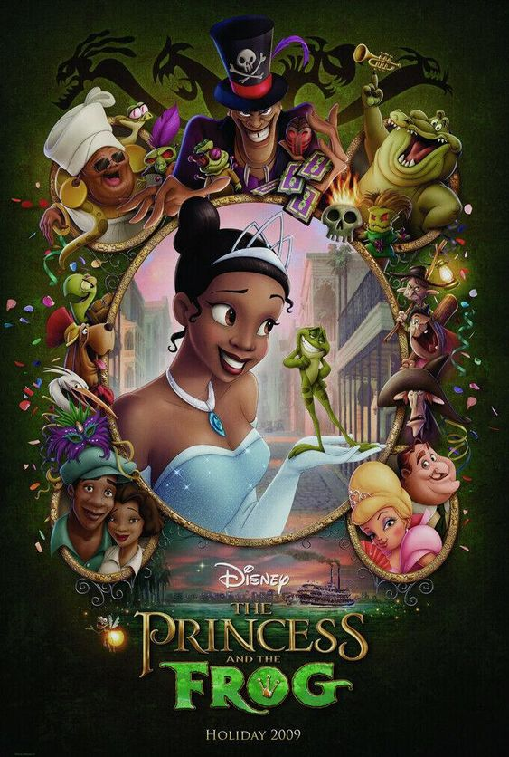

The Frog Prince
Once upon a time, in a grand palace near a deep, dark forest, lived a young princess. One day, as she played by a crystal-clear spring, she accidentally dropped her golden ball into the water. She was heartbroken, for it was her favorite toy. As she wept, a frog emerged from the water and asked, "Why are you crying, dear princess?"
The princess explained her plight, and the frog offered to retrieve the ball in exchange for a promise. "What do you want in return?" asked the princess. The frog replied, "I want to be your companion, eat from your plate, and sleep on your pillow." Desperate to get her ball back, the princess hastily agreed, although she had no intention of keeping her promise.
The frog dove into the water and soon returned with the golden ball. Overjoyed, the princess took the ball and ran back to the palace, forgetting her promise. The next day, as she dined with her family, a knock came at the door. It was the frog, reminding her of her promise. Reluctantly, the princess let the frog in and allowed him to eat from her plate. That night, he followed her to her room, but she refused to let him sleep on her pillow and threw him against the wall in anger.
To her surprise, the frog transformed into a handsome prince. He explained that he had been cursed by a wicked witch, and her act of letting him into her life had broken the spell. The princess, now filled with remorse and admiration, apologized and welcomed the prince with open arms.
The prince and the princess became inseparable friends, and soon their friendship blossomed into love. They were married in a grand ceremony attended by all the creatures of the forest, who rejoiced at the breaking of the curse. The prince and princess lived happily ever after, ruling their kingdom with wisdom and kindness, forever grateful for the magical twist of fate that had brought them together.